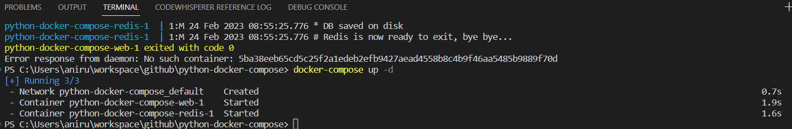

Build your App using docker-compose
From your project directory, start up your application by running docker-compose up
C:\Users\aniru\workspace\docker\python-docker-compose> docker-compose up

Compose pulls a Redis image, builds an image for your code, and starts the services you defined. In this case, the code is statically copied into the image at build time.